Forestry. Part 2
Description
This section is from the book "The Book Of Woodcraft", by Ernest Thompson Seton. Also available from Amazon: The Book of Woodcraft.
Forestry. Part 2
Balsam Poplar, Balm Of Gilead, Or Tacamahac (Populus Balsamifera)
Fifty or 60 feet ordinarily, but sometimes 100 feet high. Bark rough and furrowed. The great size of the buds and their thick shiny coat of fragrant gum are strong marks. Wood much as in the preceding, but weighs 23 lbs. Leaves 3 to 6 inches long. Can. & Nor. States.
Cottonwood (Populus Deltoides)
Small and rare in the northeast. Abundant and large in west; even 150 feet high. Wood as in other poplars but weighs 24 lbs. Leaves 3 to 5 inches long. Maine to Ga. and west to Alberta.
Black Walnut (Juglans Nigra)
A magnificent forest tree up to 150 feet high, usually much smaller in the east. Wood, a dark purplish brown or gray; hard, close-grained; strong; very durable in weather or ground work, and heavy. A cubic foot weighs 38 lbs. Leaflets 13 to 23; and 3 to 5 inches long. Fruit nearly round, 1 1/2 to 3 inches in diameter. Mass. to Minn, and south to Miss.
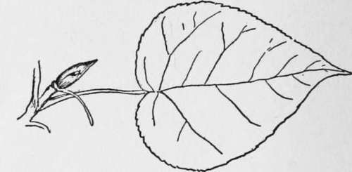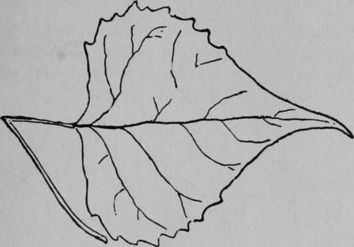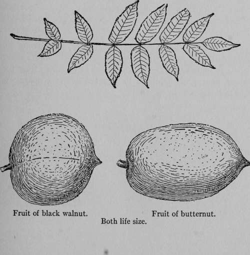White Walnut, Oil Nut Or Butternut (Juglans Cinerea)
Much smaller than the last, rarely 100 feet high; with much smoother bark and larger, coarser, compound leaves, of fewer leaflets but the petioles or leaflet stalks, and the new twigs are covered with sticky down.
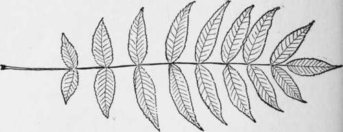The wood is light brown, soft, coarse, not strong but very enduring in weather and ground work; light; leaves 15 to 30 inches long; leaflets 11 to 19 in number and 3 to 5 inches long; fruit oblong 2 to 3 inches long. Nova Scotia to Minn, and south to Miss.
Pecan (Hicoria Pecan)
A tall slender forest tree in low moist soil along streams, up to 170 feet in height: famous for its delicious nuts, they are smooth and thin shelled; fruit, oblong, cylindrical, 1 1/2 to 2 1/2 inches long. Its leaves are smooth when mature: leaflets 11 to 15, and 4 to 7 inches long: Wood hard and brittle, a cubic foot weighs 45 lbs. Central Mississippi Valley.
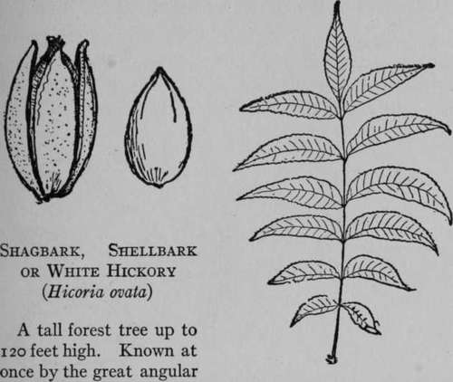Slabs of bark hanging partly detached from its main trunk, forced off by the growth of wood, but too tough to fall. Its leaves are 8 to 14 inches long, with 5 to 7 broad leaflets. The wood is very light in color,close-grained, tough and elastic. It makes an excel-lent bow; is the best of fuel. A cubic foot weighs 52 lbs. Dak. to Maine and south to Miss.
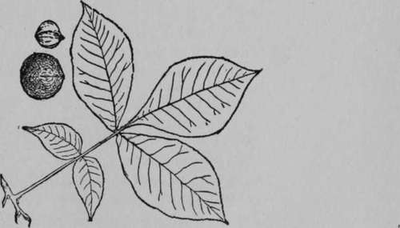Mockernut, White Heart Or Big Bud Hickory (Hicoria Alba)
A tall forest tree, up to 100 feet. Wood much like that of Shagbark, but not quite so heavy (51 lbs.). Its bark is smooth and furrowed like that of the Pignut. Its leaves like those of the Shagbark, but it has 7 to 9 leaflets, instead of 5 to 7; it has a large terminal bud 1/2 to 3/4 of an inch long, and the leaves have a resinous smell. Its nut in the husk is nearly 2 inches long; the nut shell is 4-ridged toward the point, has a very thick shell and small sweet kernel. Maine to Okla. and Fla.
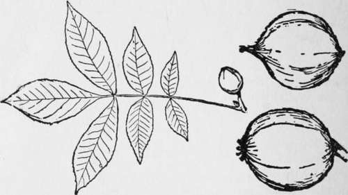Pignut Hickory (Hicoria Glabra)
A tall forest tree; 100 and up to 120 feet high. Wood much as in the Mockernut; bark smooth and furrowed; not loose plates. Leaves 8 to 12 inches long. Nut slightly or not at all angular, very thick shelled; the pear shape of fruit is a strong feature, to 2 inches long. Maine to Neb. and south to the Gulf.
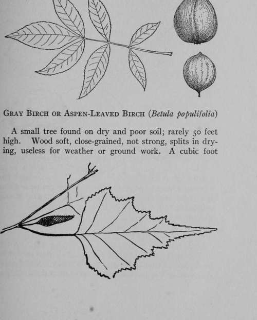Weighs 36 lbs. Leaves 2 to 3 inches long. It has a black triangular scar at each armpit. Que. south to Md.
White, Canoe Or Paper Birch (Betula Papyrifera)
A tall forest tree up to 80 feet high; the source of bark for canoes, etc. One of the most important trees in the northern forest. Besides canoes, wigwams, vessels and paper from its bark, it furnishes syrup from its sap and the inner bark is used as an emergency food. Every novice rediscovers for himself that the outer bark is highly inflammable as well as waterproof, and ideal for fire-lighting. Though so much like the Gray birch, it is larger, whiter, and with but small black scars at each limb. The timber is much the same, but this weighs 37 lbs. Its leaf and catkin distinguish it; the former is 2 to 3 inches long. All Canada and south to Ill.
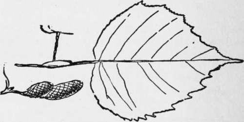Yellow Birch, Gray Birch (Betula Lutea)
A forest tree, of 30 to 50 feet height. Bark obviously birch, but shaggy and gray or dull yellow. Wood as in the others, but reddish. A cubic foot weighs 41 lbs.
Leaves 3 to 4 inches long. Minn, to Newfoundland and south to Va.
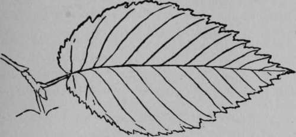Ironwood, Hard-Hack, Leverwood, Beetle Wood Or Hop Hornbeam (Ostyra Virginiana)
A small tree; 20 to 30, rarely 50, feet high; named for its hardness and its hop-like fruit. Bark, furrowed. Wood, tough, close-grained, unsplittable. One of the strongest, heaviest and hardest of timbers. A cubic foot weighs over 51 lbs. That is, it comes near to Shagbark Hickory in weight and perhaps goes beyond it in strength and hardness. Leaves 3 to 5 inches long. Fruit 1 1/2 to 2 1/2 inches long. Dak. to Nova Scotia and south to Gulf.
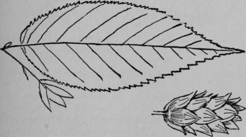
Continue to:
- prev: XV. Forestry
- Table of Contents
- next: Forestry. Part 3
Tags
bookdome.com, books, online, free, old, antique, new, read, browse, download